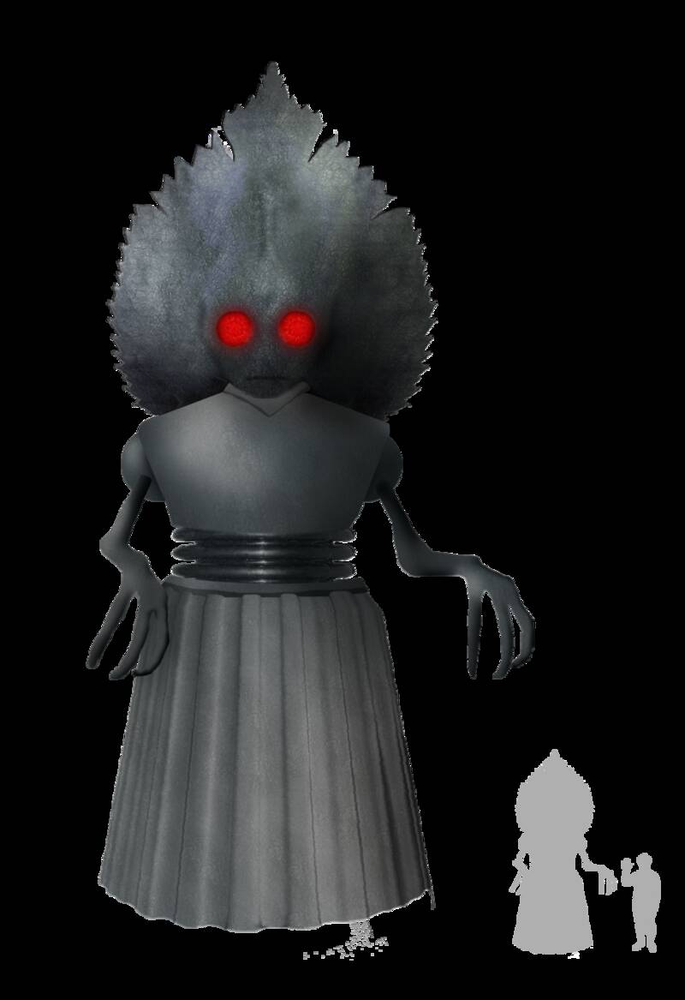

Flatwoods monster
West Virginia, 1952

On September 12, 1952, after a bright light crossed the sky, a group of boys, Kathleen May and a National Guardsman climbed a hill and said they met a figure about 10 feet tall with a glowing red face, amid a pungent mist. Skeptic Joe Nickell proposed the light was a meteor, a pulsing red light an aircraft beacon, and the figure a startled barn owl. The town now welcomes visitors as the home of the Green Monster. 1
Open in the interactive Watcher
Related
- Joe Nickell Person
Sources
- Flatwoods monster Wikipedia